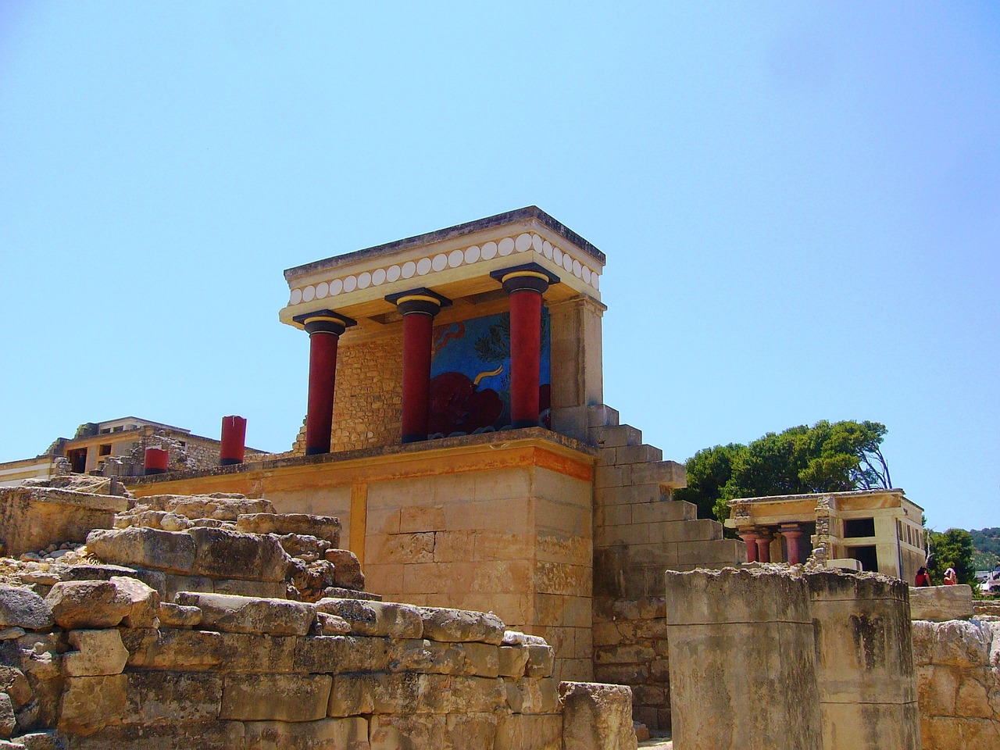

Az Ókori Görögórszág történelme
A minoszi civilizáció
A legkorábbi civilizáció, amely a mai Görögország területén feltűnt, a Kréta szigetén virágzó minoszi civilizáció volt kb. i. e. 2500 és i. e. 1450 között. Nagyon keveset tudunk a minoszi emberekről, még a nevük is modern kori névadás eredménye Minósz, a legendás krétai király után. Úgy tűnik, nem indoeurópai nép(ek) voltak, nyelvük, az eteokrétai írása lehet a megfejtetlen lineáris A írás. Alapvetően tengeri kereskedő nép voltak. Bár eltűnésük oka bizonytalan (bár egyesek úgy gondolják, a Théra vulkánkitörése vetett véget civilizációjuknak), mindenesetre egy, a szárazföld felől érkező mükénéi görög invázió zárta le történetüket.
A poliszok kora

Az i. e. 8–i. e. 4. század közötti korszak politikai alapegysége az önálló görög városállam, a polisz volt. A politika szó szerint a polisz dolgait jelenti. Minden polisz független volt, legalábbis elvileg. Egyes poliszok alávetettjei lehettek másoknak – egy gyarmat hagyományosan igazodott anyavárosához (metropolisz), vagy teljesen a másoktól függő kormányzat alatt élhettek – az Athén felett uralkodó harminc zsarnokot Spárta ültette a nyakukba a peloponnészoszi háború után. A névleges legfőbb hatalom azonban mindig az adott poliszon belül volt megtalálható. Azt jelentette mindez, hogy amikor a görögök háborúba indultak (például a Perzsa Birodalom ellen), akkor ezt mindig szövetség formájában tették. Szintén bőséges lehetőség volt a Görögországon belül egymás ellen vívott háborúkhoz.
A római uralom

Görögország annyira lehanyatlott katonailag, hogy Róma könnyedén elfoglalta i. e. 187-től kezdődően. Viszonzásul a görög élet pedig elfoglalta Rómát. Bár a római uralmat Görögországban hagyományosan Korinthosz Lucius Mummius általi kifosztásától, i. e. 123-tól számítják, Makedónia már római uralom alá került i. e. 168-ban, Perszeusz makedón király Aemilius Paullustól Püdnánál elszenvedett vereségével. A rómaiak a területet négy kisebb köztársaságra osztották, majd i. e. 146-ban Makedónia hivatalosan római provincia lett Thesszaloniké fővárossal. A többi görög városállam fokozatosan végül hűségadót kezdett fizetni Rómának, amivel de jure is véget ért autonómiájuk. A rómaiak helyi közigazgatást hagytak a görögöknek, nem téve kísérletet a meglévő politikai struktúrák eltörlésére. Az Agora Athénban továbbra is a politikai és polgári élet színtere maradt.